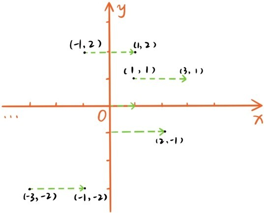
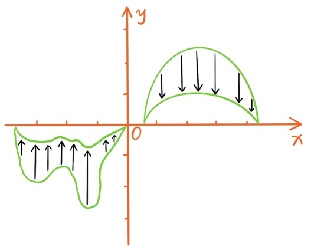
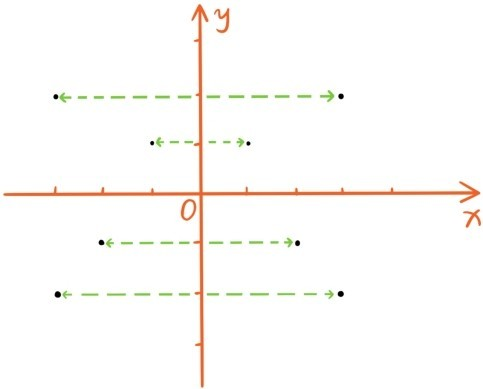
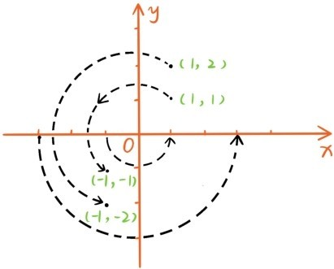
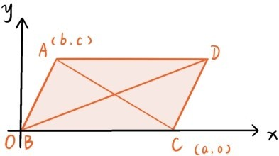

实数可以与数轴上的点建立一一对应关系，实数的加减乘除运算与数轴的平移、伸缩和旋转也直接挂钩。现在坐标平面的点与有序实数对(x,y)可以建立起一一对应的关系。那么有序实数对(x,y)有哪些运算，这些运算对应着平面的哪些变换呢？
首先，有序实数对可以相加，(a,b)+(c,d)=(a+c,b+d)。让所有(x,y)都加上(2,0)其实就是让平面上所有点向右移动2，或者是让整个平面向右平移2。

让所有(x,y)都加上(0,-3)就是让整个平面向下平移3。更一般地，让所有(x,y)都加上(a,b)其实也是一种平移运动，这种平移运动将原点(0,0)移动到点(a,b)，所以平移的方向就是从点(0,0)到点(a,b)的方向，平移的距离是。所以每个实数对(a,b)不但可以表示平面上的点，还可以看成是平面的一种平移运动，一种有大小，有方向的量，这是一种非常核心的观点，后面还会着重提及这种观点。
除了加法运算外，有序实数对可以相乘，(a,b)×(c,d)=(ac,bd)。让所有(x,y)都乘以(2,1)其实就是让整个平面保持y轴不变，往x轴方向拉长为原先的2倍，乘以其实就是让整个平面保持x轴不变，往y轴方向压缩为原先的 。

让所有(x,y)都乘以(-1,1)呢，如果把y轴看作一面镜子，这时平面上每个点都变成了它的镜像。

因此让所有(x,y)都乘以(-1,1)可以看成是一种照y轴镜子的变换，也可以看成是让整个平面绕y轴旋转180°，所以点(x,y)与点(-x,y)关于y轴对称。同样地，让所有(x,y)都乘以(1,-1)可以看成是一种照x轴镜子的变换，也可以看成是让整个平面绕x轴旋转180°，所以点(x,y)与点(x,-y)关于x轴对称。
最后，让所有(x,y)都乘以(-1,-1)变成(-x,-y)可以看成是整个平面绕原点旋转180°。平面上两个图形是关于点O对称的，如果整个平面绕点O旋转180°会将一个图形变换为另一个图形。根据定义坐标平面上任何点(x,y)都和点(-x,-y)关于原点对称。

到目前为止，已经介绍了平面直角坐标系，以及用坐标运算表示的各种平面变换。可能有读者会问：这种坐标语言坐标方法有什么用处呢？能用来解决什么样的几何问题？接下来用坐标方法证明第四章定理6.11：
定理 平行四边形ABCD两条对角线的平方和等于4条边的平方和。
在下图中，以B为原点，以BC为x轴建立直角坐标系，假设点C的坐标是(a,0)，点A的坐标是(b,c)。注意线段AB可以通过平移与DC重合，而这样的平移变换把A平移至D，因此正是，所以点D的坐标是(a+b,c)。根据两点距离公式，AB2=CD2=b2+c2，BC2=AD2=a2，AC2=(a-b)2+c2，BD2=(a+b)2+c2。代入计算得到
AB2+CD2+BC2+AD2=AC2+BD2。

请注意整个证明过程中，没有添加辅助线，而是把几何问题转化为代数计算，请比较这个证明和第四章中提示的几何证明。
提问时间
5.2.1 平面的一个平移变换，把点(4,2)变换为点(1,4)，那么它会把点(2,-1)变换为哪个点，又会把哪个点变换为点(-2,3)？
5.2.2 整个平面保持x轴不变的，往y轴方向的均匀伸缩变换把点(-1,4)变换为点(-1,2)，那么它会把点(2,-2)变换为哪个点，又会把哪个点变换为点(0,-1)？
5.2.3 点(-2,3)与哪个点关于x轴对称，与哪个点关于y轴对称，与哪个点关于原点对称？
5.2.4 证明海伦-秦九韶公式：若三角形的3条边长分别为a，b，c，则三角形的面积为
（提示：以三角形的一个顶点为原点，以三角形的一条边为x轴建立直角坐标系）